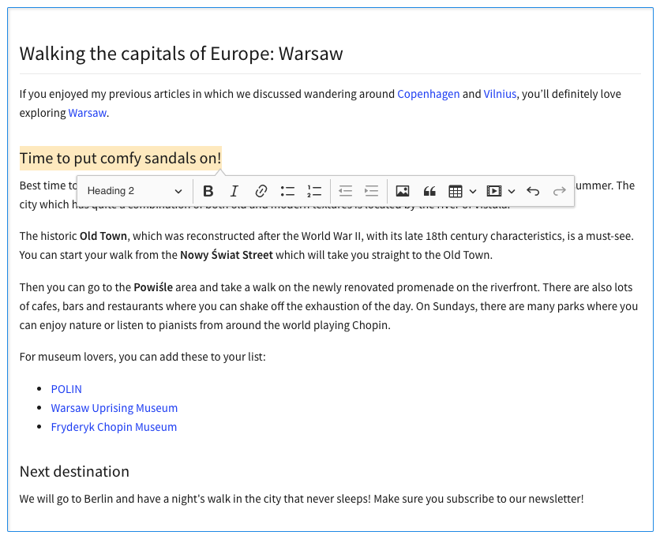

选择的原因
这里将wangEditor5与CkEditor5作为比较
- CkEditor优势
- 文档详细
- 用户量大
- 自定义插件扩展非常容易
- CkEditor劣势
- 纯英文文档，无翻译
- 未解决的_issues_尚且较多
npm月下载量比较
CKEditor月下载量如下图所示：
wangEditor月下载量如下图所示：
结论：CKEditor的月下载量吊打了wangEditor，并且最新的wangEditor5月下载量不过1400，个人比较倾向于使用月下载量10000+的
github关键数据比较：
CKEditor的GitHub星星数与issues数量如下图所示：
wangEditor的GitHub星星数与issues数量如下图所示：
结论：wangEditor在star上和处理问题的及时程度秒杀了CKEditor, 这一定程度可能也是CKEditor的star如此少的原因，但介于wangEditor是由国人开发，国人开发的特点是star量比较虚，实际使用量和其star量不成正比，参考字节跳动web infra团队开源的Modern.js
打包体积比较
相同功能的情况下CKEditor体积
wangEditor体积
结论：
- 同样的功能
CKEditor的打包体积更小，B端要求不高，C端原则基本遵循满足需求的情况下，能使用小的就使用小的 CKEditor功能栏采取按需加载的方式，即我们如果不需要某些功能，那些功能文件就不会被打包，测试了一下如果只留一个Bold插件的情况下可以减少_42.2kb_的js体积
功能比较
主要功能大同小异，性能上的表现也几乎一致，CKEditor的亮点在于其插件化的扩展更加友好， 除了自己编写插件，还可以继承已有的插件，重写对应的插件方法，如果需要继承，官网的插件都是提供对应的方法的，重写方法就好。并且插件的编写方式类似于编写webpack的插件，提供了一系列的钩子在特定的条件下执行，后面会详细介绍。
CkEditor基本环境搭建
根据业务需要, 使用create-react-app搭建项目, 使用react-app-rewired启动项目, 使用customize-cra修改webpack配置
安装
1 | yarn add --dev \ |
webpack配置
CKEditor集成到项目中需要重新定义某些文件的解析规则
否则会报Error: Cannot read property 'getAttribute' of null (ckeditor)
https://stackoverflow.com/questions/66416928/error-cannot-read-property-getattribute-of-null-ckeditor
需要做如下解析：
- 内置的
svg文件需要使用raw-loader - 如果需要做视觉集成(主题), 内置的
css文件优先使用postcss-loader,并且引入@ckeditor/ckeditor5-theme-lark包, 主题将增加约_30kb_的打包体积, 开发者可以酌情考虑。链接如下：
https://ckeditor.com/docs/ckeditor5/latest/examples/framework/theme-customization.html - 对于特定的
CKEditor中的css样式，可以用如下的正则表达式判断
1 |
|
富文本的模式
- 经典模式如下
npm install --save @ckeditor/ckeditor5-build-classic

- 内联模式
npm install --save @ckeditor/ckeditor5-build-inline
- 气泡模式
npm install --save @ckeditor/ckeditor5-build-balloon

- 气泡块模式
npm install --save @ckeditor/ckeditor5-build-balloon-block

- 文档模式
npm install --save @ckeditor/ckeditor5-build-decoupled-document

插件添加
插件添加逻辑必须遵循官方文档
个人比较推荐从以下的网站进去，定义自己的模板
https://ckeditor.com/ckeditor-5/online-builder/
按照指示下载完成后会有以下的文件，还有demo，如下图
也可以根据已有的插件集，像上图那样的自己去引用官方已有的插件, 对应的所有插件如下：
https://ckeditor.com/docs/ckeditor5/latest/features/index.html
编写CkEditor组件
当前组件被antd的Form包裹，作为表单组件
1 | function CKEditor(props) { |
关键属性如下：
editor：使用的富文本编辑器模板config：富文本编辑器的配置项，默认会用Editor.defaultConfig配置好的disabled: 富文本是否可编辑data: 富文本的html字符串onReady: 编辑器刚构建好时会调用，官网推荐在这里将富文本做存储，避免重复构建onChange: 改变时调用onBlur: 焦点变化时调用onError: 出现错误时调用常见问题
- 编辑器被重复引用：
- 产生原因：
config属性中有plugins属性，官网将对应的插件直接在组件引用
1 | import Essentials from '@ckeditor/ckeditor5-essentials/src/essentials'; |
- 问题链接:https://github.com/ckeditor/ckeditor5/issues/5776
- 解决方案：编写前文图例的
ckeditor.js，然后将CkEditor组件需要的配置注入，实际编写的组件中引入对应js的文件，不需要的删除，目前没看到什么场景必须使用config.plugins
- 打包内存溢出(我没遇到过)
解决方案官网已经给出，链接如下：
https://ckeditor.com/docs/ckeditor5/latest/installation/getting-started/frameworks/react.html#integrating-a-build-from-the-online-builder
中文包
全局引入
1 | import "@ckeditor/ckeditor5-build-classic/build/translations/zh-cn" |
1 | Editor.defaultConfig.language = 'zh-cn' |
自定义插件
npm包的形式
个人推荐使用ckeditor5-package-generator
CkEditor5要求所有的插件包都必须以ckeditor5-开头，中间字符为0-9、a-z、. - _，创建和打包的时候都会正则校验- 上述插件会提供一个打包模板，我们可以在这个模板上扩展，会有一个已经编写好的插件
详细的编写方式可见参考链接
简述如下：
- 一个插件就是一个继承于
Plugin的class editor.ui.componentFactory负责添加一个工具，可以使用模型层的监听器为用户对工具栏上自定义ui定义其操作
注意点：
如果多个插件打包，并非工具生成的目录， 目录如下
可以直接打包，也可以使用dll模式，这里推荐直接打包，webpack5自带缓存，dll不会对打包速度有明显的效果
1 | ... |
1 | import Plugin from '@ckeditor/ckeditor5-core/src/plugin'; |
自定义扩展
完整文档可见CKEditor提供了自定义扩展，根据先有的adapter做扩展，以下都将用Image Uploader做举例
例如： Upload adapter作用是在文件编辑器和文件上传服务器之间构建一个桥梁，我们可以自定义扩展用户上传的行为以及上传到服务器的接口等，这个adapter是基于File repository plugin创建的，像image upload plugin也是基于这个创建的，``File repository plugin`是整个上传的核心插件。
区别：
自定义插件是完全从ui到功能的自定义实现
自定义扩展是基于已有的富文本编辑器功能，做一些替换或者功能的提升
工作流程
- 首先，图像（或图像）需要进入富文本编辑器内容。有很多方法可以做到这一点，例如：
- 从剪贴板粘贴图像
- 从文件系统中拖动文件
- 通过文件系统对话框选择图像，即选择上传
这些行为都将被image uploader plugin插件捕获
对于每个上传的图像都会被
image upload plugin创建出file loader的实例，通过upload adapter将其上传到服务器，并根据url正确的展示在编辑器内在上传图片时，
image upload plugin会做以下事情
- 创建图像的占位符
- 插入到编辑器
- 展示每一个图像的进度条
- 上传完成前如果做了删除图片的操作，终止上传
- 图片上传完成，
upload adapter通知editor（调用Promise），image upload创建的标签中的src和srcset将被替换
扩展方式
image upload必须在编辑器中启用。它在所有官方版本中默认启用，如果正在自定义CKEditor 5编辑器，那么需要自己写这个插件需要自定义
upload adapter，我们可以根据使用已有的upload adapter，也可以自定义（建议自定义，将上传和回显操作控制在自己手中）编写UploadAdapter
自定义
UploadAdapter，主要是自定义上传的服务器路径以及自定义回显方式根据UploadAdapter参考链接`可以找到对应的方法
upload()返回一个Promiseabort()上传中止所做的操作
- 通常我们使用
XMLHttpRequest在这个UploadAdapter中，详细请见创建一个简易的UploadAdapter，完整代码如下
1 | class MyUploadAdapter { |